指令&CPU
Computer Instructions
计算机指令
Computer instructions are a set of machine language instructions that a particular processor understands and executes. A computer performs tasks on the basis of the instruction provided.
计算机指令是由特定处理器理解并执行的一组机器语言指令。计算机根据所提供的指令执行任务。
An instruction comprises of groups called fields. These fields include: The Operation code (Opcode) field which specifies the operation to be performed. The Address field which contains the location of the operand, i.e., register or memory location.located. The Mode field which specifies how the operand will be located.
一条指令由称为字段的组组成。这些字段包括:操作代码(Opcode)字段，指定要执行的操作。地址字段包含操作数的位置，例如寄存器或内存的位置。模式(Mode)字段，指定如何定位操作数。
A basic computer has three instruction code formats which are: Memory - reference instruction, Register- reference instruction, Input-Output instruction.
一台基本的计算机有三种指令码格式:存储器-引用指令、寄存器-引用指令、输入-输出指令。
Memory Reference
These instructions refer to memory address as an operand. The other operand is always accumulator. Specifies 12-bit address, 3-bit opcode (other than 111) and 1-bit addressing mode for direct and indirect addressing.
这些指令将内存地址作为操作数。另一个操作数总是累加器。指定12位地址、3位操作码(111除外)和1位寻址模式，用于直接寻址和间接寻址。
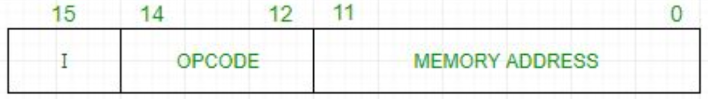Register Reference
These instructions perform operations on registers rather than memory addresses. The IR(14 - 12) is 111 (differentiates it from memory reference) and IR(15) is 0 (differentiates it from input/output instructions). The rest 12 bits specify register operation.
这些指令在寄存器而不是内存地址上执行操作。IR(14 - 12)为111(区别于内存引用)，IR(15)为0(区别于输入/输出指令)。其余12位指定寄存器操作。
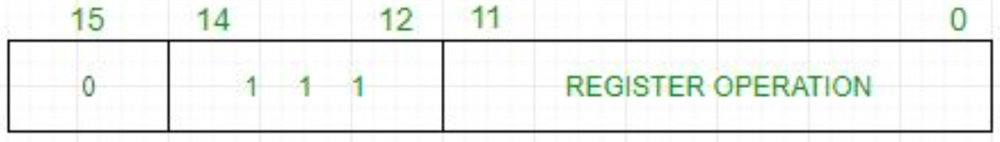Input-Output Reference
These instructions are for communication between computer and outside environment. The IR(14 - 12) is 111 (differentiates it from memoryreference) and IR(15) is 1 (differentiates it from register reference instructions). The rest 12 bits specify I/O operation.
这些指令用于计算机与外部环境之间的通信。IR(14 - 12)是111(区别于内存引用)，IR(15)是1(区别于寄存器引用指令)。其余12位指定I/O操作。
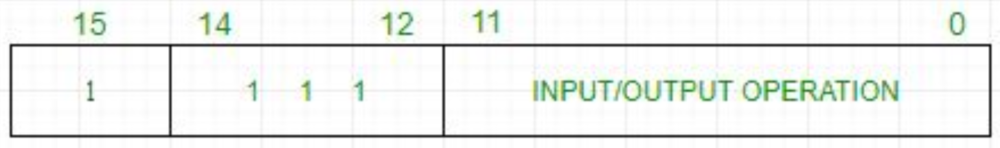Instruction Set Completeness
指令集完整性
A set of instructions is said to be complete if the computer includes a sufficient number of instructions in each of the following categories: Arithmetic, logical and shift instructions. A set of instructions for moving information to and from memory and processor registers. Instructions which controls the program together with instructions that check status conditions. Input and Output instructions.
如果计算机在下列每一类指令中都包含足够数量的指令，则称指令集是完整的：算术指令，逻辑和移位指令。传输指令，用于在存储器和处理器寄存器之间来回移动信息。控制指令，用于控制程序和检查状态条件。输入和输出指令。
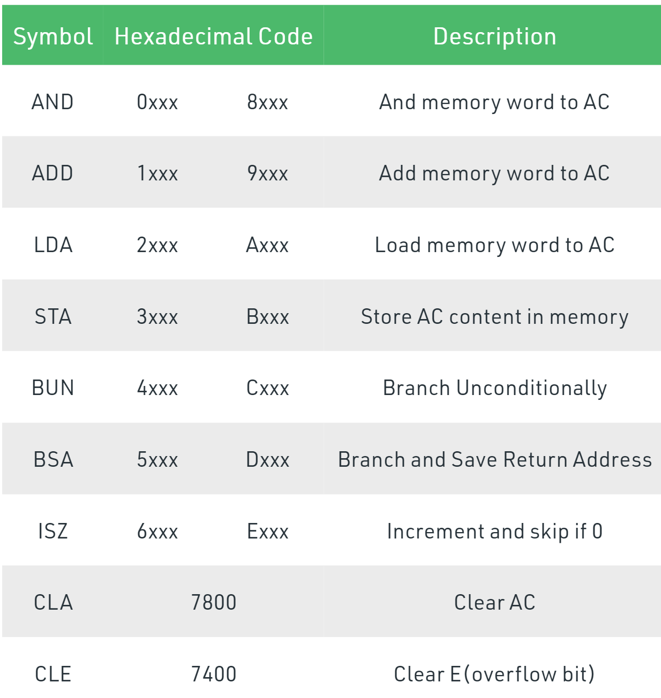Addressing Modes
寻址模式
The term addressing modes refers to the way in which the operand of an instruction is specified. The addressing mode specifies a rule for interpreting or modifying the address field of the instruction before the operand is actually executed.
寻址模式是指定指令的操作数的方式。寻址模式指定了在实际执行操作数之前解释或修改指令地址字段的规则。
Addressing modes for 8086 instructions are divided into two categories: Addressing modes for data. Addressing modes for branch.
8086指令的寻址模式分为两类:数据寻址模式。分支寻址模式。
The 8086 memory addressing modes provide flexible access to memory, allowing you to easily access variables, arrays, records, pointers, and other complex data types. The key to good assembly language programming is the proper use of memory addressing modes.
8086内存寻址模式提供了对内存的灵活访问，允许您轻松访问变量、数组、记录、指针和其他复杂数据类型。良好的汇编语言编程的关键是正确使用内存寻址模式。
An assembly language program instruction consists of two parts: Opcode, Operand.
汇编语言程序指令由两部分组成：操作码和操作数。
The memory address of an operand consists of two components: Starting address of memory segment. Effective address or Offset: An offset is determined by adding any combination of three address elements: displacement, base and index.
操作数的内存地址由两部分组成：内存段的起始地址。有效地址或偏移量：通过位移、基数和索引三个地址元素的任意组合来确定。
Implied mode
隐式寻址
In implied addressing the operand is specified in the instruction itself. In this mode the data is 8 bits or 16 bits long and data is the part of instruction. Zero address instruction are designed with implied addressing mode.
在隐式寻址中，操作数在指令本身中指定。在这种模式下，数据是8位或16位长，数据是指令的一部分。零地址指令采用隐式寻址方式设计。
$$ \text{Example: CLC (used to reset Carry flag to 0)} $$
Immediate addressing mode
立即寻址
In this mode data is present in address field of instruction. Note: Limitation in the immediate mode is that the range of constants are restricted by size of address field.
在这种模式下，数据直接呈现在指令的地址字段中。注意：立即寻址的限制是数据的范围受地址字段大小的限制。
$$ \text{Example: MOV AL, 35H (move the data 35H into AL register)} $$
Register mode
寄存器寻址
In register addressing the operand is placed in one of 8 bit or 16 bitd general purpose registers. The data is in the register that is specified by the instruction.
在寄存器寻址中，操作数被放置在8位或16位通用寄存器中。数据在指令指定的寄存器中。
$$ \text{Example: MOV AX,CX (move the contents of CX register to AX register)} $$
Register indirect mode
寄存器间接寻址
In this addressing the operand's offset is placed in any one of the registers BX,BP,SI,DI as specified in the instruction. The effective address of the data is in the base register or an index register that is specified by the instruction.
在这个寻址中，操作数的偏移量被放置在指令中指定的寄存器BX、BP、SI、DI中的任何一个寄存器中。数据的有效地址位于指令指定的基寄存器或索引寄存器中。
$$ \text{Example: MOV AX, [BX](move the contents of memory location addressed by the register BX to the register AX)} $$
Auto Indexed (increment mode)
自增寻址
Effective address of the operand is the contents of a register specified in the instruction. After accessing the operand, the contents of this register are automatically incremented to point to the next consecutive memory location.(R1)+.
操作数的有效地址是指令中指定的寄存器的内容。访问操作数后，该寄存器的内容自动加1，指向下一个连续的内存位置(R1)+。
Auto indexed (decrement mode)
自减寻址
Effective address of the operand is the contents of a register specified in the instruction. Before accessing the operand, the contents of this register are automatically decremented to point to the previous consecutive memory location. -(R1).
操作数的有效地址是指令中指定的寄存器的内容。在访问操作数之前，该寄存器的内容自动递减，指向前一个连续的内存位置。—(R1)。
Direct addressing/ Absolute addressing mode
直接寻址
The operand's offset is given in the instruction as an 8 bit or 16 bit displacement element. In this addressing mode the 16 bit effectived address of the data is the part of the instruction.
操作数的偏移量在指令中以8位或16位位移元素的形式给出。在这种寻址模式中，数据的16位有效地址是指令的一部分。
$$ \text{Example: ADD AL,[0301] (add the contents of offset address 0301 to AL)} $$
Indirect addressing Mode
间接寻址
In this mode address field of instruction contains the address of effective address. Here two references are required.1st reference to get effective address.2nd reference to access the data.
在这种模式下，指令的地址字段包含有效地址的地址。这里需要两个引用。第一次引用得到有效的地址。第二次引用访问数据。
Based on the availability of Effective address, Indirect mode is of two kinds:
根据有效地址的可用性，间接方式有两种:
Register Indirect
寄存器间接寻址
In this mode effective address is in the register, and corresponding register name will be maintained in the address field of an instruction. Here one register reference, one memory reference is required to access the data.
在这种模式下，有效地址保存在寄存器中，相应的寄存器名保存在指令的地址域中。这里需要一个寄存器引用，一个内存引用来访问数据。
Memory Indirect
存储器间接寻址
In this mode effective address is in the memory, and corresponding memory address will be maintained in the address field of an instruction. Here two memory reference is required to access the data.
在这种模式下，有效地址在存储器中，相应的存储器地址保存在指令的地址域中。这里需要两个内存引用来访问数据。
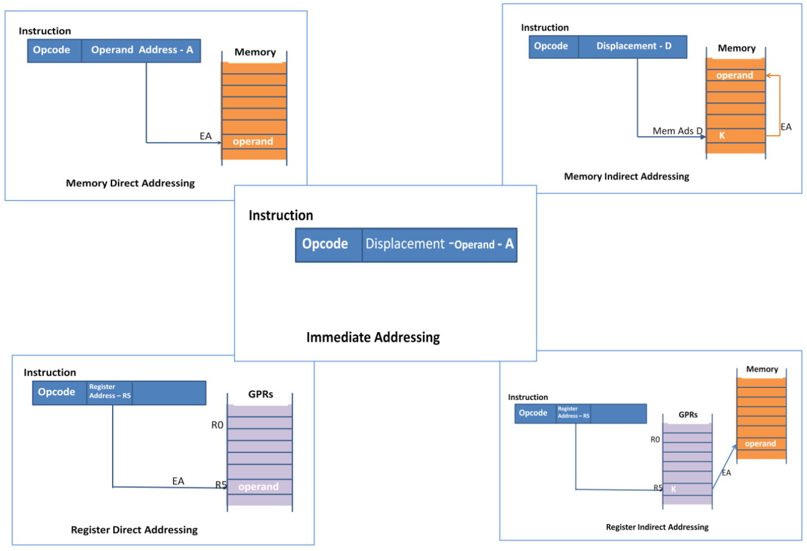Indexed addressing mode
变址寻址
The operand's offset is the sum of the content of an index register Sl or DI and an 8 bit or 16 bit displacement.
操作数的偏移量是变址寄存器Sl或DI的内容和8位或16位的位移之和。
$$ \text{Example: MOV AX, [SI + 05]} $$
Based Indexed Addressing
基址变址寻址
The operand's offset is sum of the content of a base register BX or BP and an index register Sl or DI.
操作数的偏移量是基址寄存器BX或BP和变址寄存器Sl或DI的内容之和。
$$ \text{Example: ADD AX, [BX+SI]} $$
PC relative addressing mode
PC相对寻址
PC relative addressing mode is used to implement intra-segment transfer of control, In this mode effective address is obtained by adding displacement to PC.
采用PC相对寻址方式实现段内控制的传递，该方式通过在PC上增加位移来获得有效地址。
$$ \text{Example: EA = PC + Address field value.} $$
Base register addressing mode
基址寄存器寻址
Base register addressing mode is used to implement inter segment transfer of control. In this mode effective address is obtained by adding base register value to address field value.
采用基址寄存器寻址方式实现控制的段间传输。在这种模式下，通过将基址寄存器值与地址字段值相加来获得有效地址。
$$ \text{Example: EA = Base register + Address field value.} $$
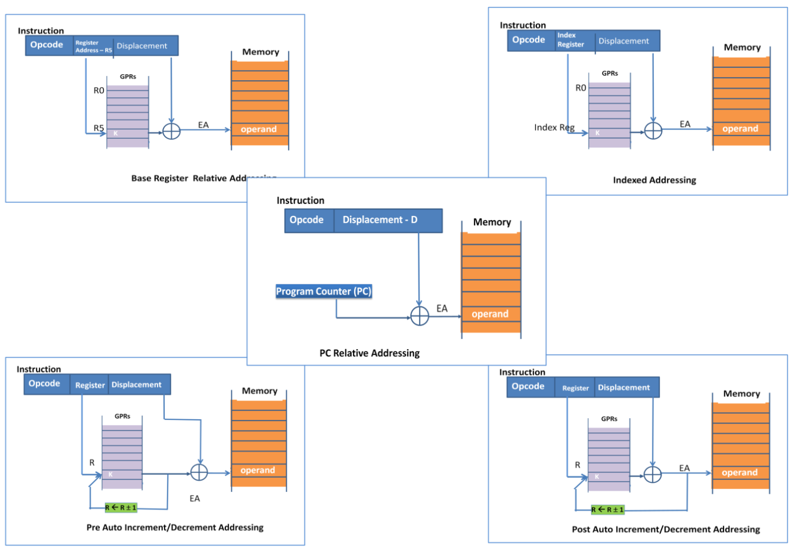Note
PC relative and based register both addressing modes are suitable for program relocation at runtime. Based register addressing mode is best suitable to write position independent codes.
PC相对寻址模式和基址寄存器的寻址模式都适用于运行时的程序重定位。基址寄存器的寻址方式最适合编写与位置无关的代码。
Advantages of Addressing Modes
寻址模式的优点
To give programmers to facilities such as Pointers, counters for loop controls, indexing of data and program relocation. To reduce the number bits in the addressing field of the Instruction.
为程序员提供诸如指针、循环控制计数器、数据索引和程序重定位等功能。减少指令的寻址字段中的位数。
CPU
The CPU is the central processing unit of the computer that handles all instructions it receives from hardware and software running on the computer. The CPU is often referred to as the brain of the computer because many believe it thinks like a human brain.
CPU是计算机的中央处理单元，它处理从计算机上运行的硬件和软件接收到的所有指令。CPU通常被称为计算机的大脑，因为许多人认为它像人脑一样思考。
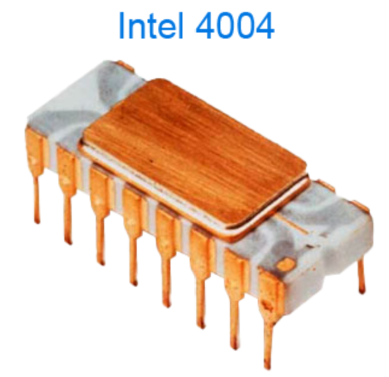What does the CPU do?
The CPU's main function is to take input from a peripheral (keyboard, mouse, printer, etc) or computer program, and interpret what it needs. The CPU then either outputs information to your monitor or performs the peripheral's requested task.
中央处理器的主要功能是从外设(键盘、鼠标、打印机等)或计算机程序获取输入，并解释它所需要的内容。然后CPU将信息输出到监视器或执行外设请求的任务。
Components of the CPU
CPU组件
In the CPU, there are two primary components. ALU (arithmetic logic unit) - performs mathematical, logical, and decision operations. CU (control unit) - directs all the processors operations.
在CPU中，有两个主要组件。ALU(算术逻辑单元)——执行数学、逻辑和决策操作。CU(控制单元)——指导所有处理器的操作。
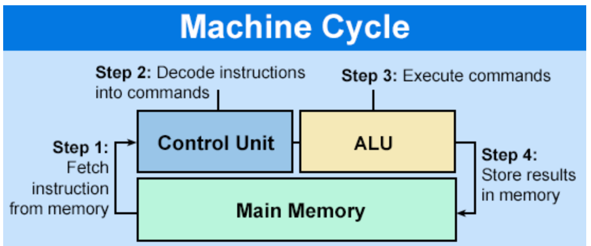Types of CPUs
In the past, computer processors used numbers to identify the processor and help identify faster processors. For example, the Intel 80486 (486) processor is faster than the 80386 (386) processor. After the introduction of the Intel Pentium processor (which would technically be the 80586), all computer processors started using names like Athlon, Duron, Pentium, and Celeron. Today, in addition to the different names of computer processors, there are different architectures (32-bit and 64-bit), speeds, and capabilities.
在过去，计算机处理器使用数字来识别处理器，并帮助识别更快的处理器。例如，Intel 80486(486)处理器比80386(386)处理器快。在英特尔Pentium处理器(技术上应该是80586)推出后，所有计算机处理器都开始使用Athlon、Duron、Pentium和Celeron等名称。今天，除了计算机处理器的不同名称之外，还有不同的体系结构(32位和64位)、速度和功能。
Intel Processors
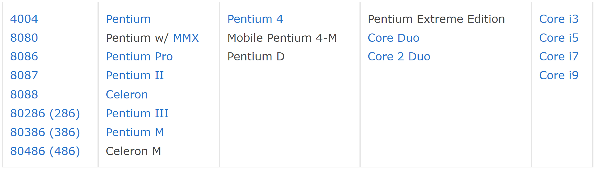AMD Processors
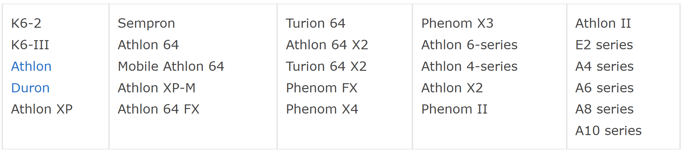Control Unit
控制单元
Control Unit is the part of the computer's central processing unit (CPU), which directs the operation of the processor. It is the responsibility of the Control Unit to tell the computer's memory, arithmetic/logic unit and input and output devices how to respond to the instructions that have been sent to the processor. It fetches internal instructions of the programs from the main memory to the processor instruction register, and based on this register contents, the control unit generates a control signal that supervises the execution of these instructions.
控制单元是计算机中央处理单元(CPU)的一部分，它指导处理器的操作。控制单元的职责是告诉计算机的存储器、算术/逻辑单元以及输入和输出设备如何响应发送给处理器的指令。它将程序的内部指令从主存中提取到处理器指令寄存器中，控制单元根据该寄存器的内容产生一个控制信号来监督这些指令的执行。
The control unit works by receiving input information to which it converts into control signals, which are then sent to the central processor. The computer's processor then tells the attached hardware what operations to perform. The functions that a controld unit performs are dependent on the type of CPU because the architecture of CPU varies from manufacturer to manufacturer. Examples of devices that require a CU are: Control Processing Units(CPUs), Graphics Processing Units(GPUs)
控制单元的工作原理是接收输入信息，并将其转换为控制信号，然后将控制信号发送到中央处理器。然后，计算机的处理器告诉连接的硬件要执行什么操作。控制单元执行的功能取决于CPU的类型，因为CPU的体系结构因制造商而异。需要使用CU的设备包括:控制处理单元(CPU)、图形处理单元(GPU)。
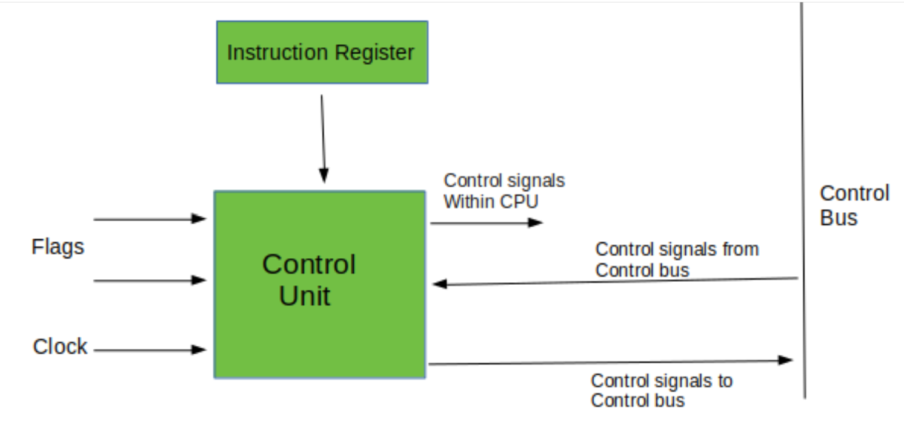Functions of the Control Unit
控制单元的功能
It coordinates the sequence of data movements into, out of, and between a processor's many sub-units. It interprets instrutions. It controls data flow inside the processor. It receives external instructions or commands to which it converts to sequence of control signals. It controls many execution units(i.e. ALU, data buffers and registers) contained within a CPU. It also handles multiple tasks, such as fetching, decoding, execution handling and storing results.
它协调处理器的许多子单元以及在子单元之间的数据移动序列的输入输出。它解释指令。它控制处理器内部的数据流。它接收外部指令或命令，并将其转换为控制信号序列。它控制许多执行单元，例如:包含在CPU内的运算器、数据缓冲区和寄存器。它还处理多个任务，如获取、解码、执行处理和存储结果。
Instruction execution is facilitated by a sequence of macro and micro-operations (steps) by the control unit. The number such micro-operations required to complete an instruction depends on the instruction and the datapath.
指令的执行由控制单元的一系列宏操作和微操作(步骤)来实现。完成一条指令所需的这种微操作的数量取决于指令和数据路径。
A program consists of a set of instructions. Each instruction is executed with macro steps typically FETCH, DECODE, EXECUTED and RESULT WRITING. The number of such macro steps varies with different CPU design.
程序由一组指令组成。每条指令都通过宏步骤执行，通常是FETCH、DECODE、EXECUTED和RESULT WRITING。这些宏步骤的数量因CPU设计的不同而不同。
These macro steps are also called Machine Cycles. Each of these macro steps has many sub operational steps called micro-operations. The micro-operations are the functional or atomic operations of a processor. Each micro-operation is executed in one timing state. The period of these timing states corresponds to one CPU clock cycle or multiple clock cycles.
这些宏步骤也称为机器周期。这些宏步骤中的每一个都有许多称为微操作的子操作步骤。微操作是处理器的功能操作或原子操作。每个微操作在一个定时状态下执行。这些定时状态的周期对应一个或多个CPU时钟周期。
Typical Instruction Execution Flow
典型指令执行流程
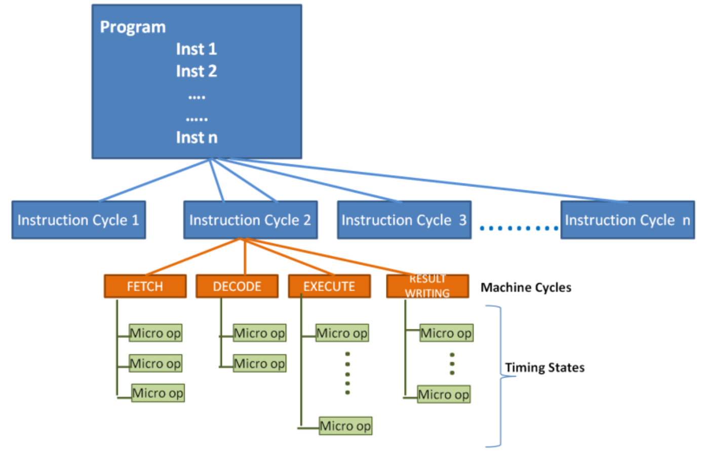The control unit performs two tasks: Sequencing - Causing the CPU to step through a series of micro-operations. Execution - Causing the performance of each micro-op.
控制单元执行两项任务: 序列化-控制CPU逐步完成一系列微操作。执行-控制每个微操作的执行。
The Control Unit is a state machine that generates control signals based on certain inputs. The output signals are generated based on the input conditions to the state machine. The clock drives the Control unit and synchronizes the micro-operations. The control unit issues one or more micro-operations per clock cycle.
控制单元是一种状态机，它根据某些输入产生控制信号。输出信号根据状态机的输入条件生成。时钟驱动控制单元并同步微操作。控制单元每个时钟周期发出一个或多个微操作。
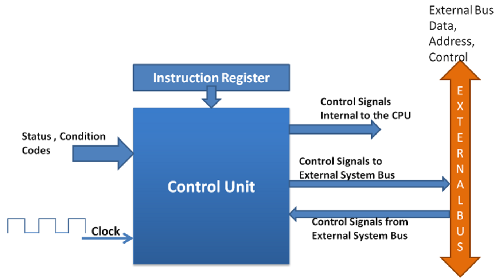CPU’s function
CPU的功能实现
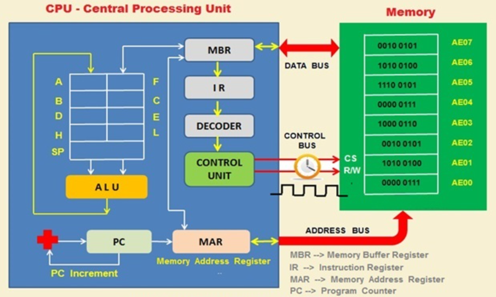 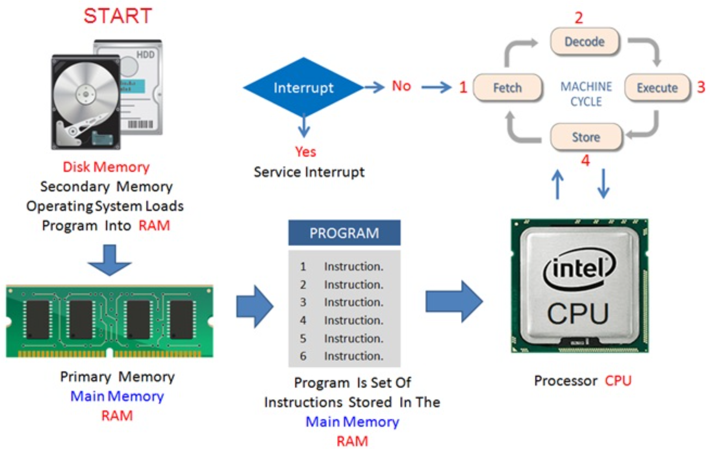How to execute a program
程序的执行
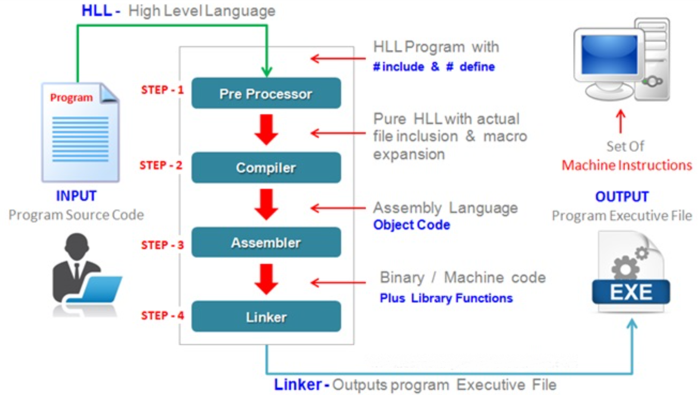CPU’s Data Path
Just as we are using our brain and notepad space, the CPU uses Registers, ALU, MEMORY, etc. The functional components that make up the requirements of all the instruction execution. The DATAPATH is a collection of registers, ALUs, multiplexers, status registers and their interconnection are called DATAPATH.
就像我们使用大脑和记事本空间一样，CPU使用寄存器、ALU、内存等，构成所有指令执行所需的功能部件。DATAPATH是寄存器、ALU、多路复用器、状态寄存器的集合，它们的互连称为DATAPATH。
Essentially a DATAPATH consists of the following elements.
基本上，DATAPATH由以下元素组成。
ALU
One or more to carry out the computation. ALU is not only used in data operations but also in address calculation too.
计算机使用一个或多个ALU执行计算程序。ALU不仅用于数据运算，也用于地址计算。
Instruction Register and decoder
指令寄存器和译码器
To decode what instruction to be executed and how to execute the instruction.
解码要执行什么指令以及如何执行该指令。
Program Counter
程序计数器
Always points to the next instruction to be executed and manages the flow of instructions.
总是指向下一个要执行的指令并管理指令流。
Memory
Instruction memory is mostly read-only in the fetch phase. Data memory is required to access the operand and result writing. The memory is accessed over a bus from the CPU.
指令内存在读取阶段大多是只读的。访问操作数和写入结果需要数据内存。内存通过总线与CPU访问。
Registers
Registers are in physical proximity and internal to the CPU that are ultra-faster than Memory. Most of the times the operands are brought from memory and kept in registers.
寄存器位于CPU的物理附近和内部，比内存快得多。大多数情况下，操作数是从内存中取出并保存在寄存器中。
Internal Registers
Instruction Register, Memory Address Register, Memory Data Register. These are not accessible to the programmer.
指令寄存器，内存地址寄存器，内存数据寄存器。这些是程序员无法访问的。
Multiplexers
A multiplexer is a digital circuit that selects one of the n data inputs and forwards it to the output. The selection of one of the n inputs is done by the select inputs.
多路复用器是一种数字电路，它从n个数据输入中选择一个并将其转发到输出。n个输入中的一个的选择是由选择输入完成的。
Internal bus
Internal bus connects all these elements.
内部总线连接所有这些元素。
Control unit
The master which manages the datapath elements.
负责管理各类数据路径的元素。
Typical Datapath with Single bus
典型的单总线数据路径
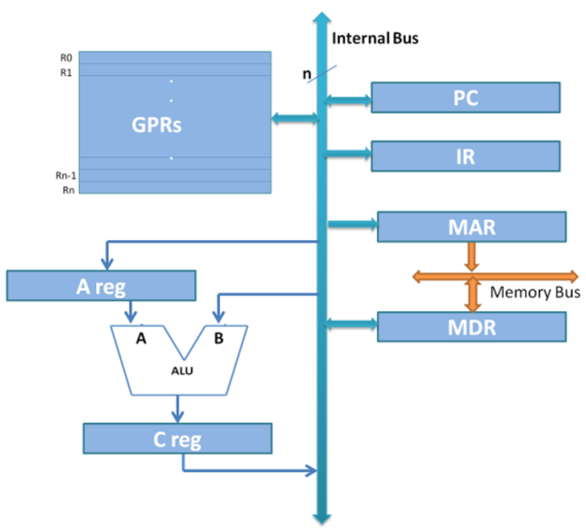Typical Datapath with two buses
具有两个总线的典型数据路径
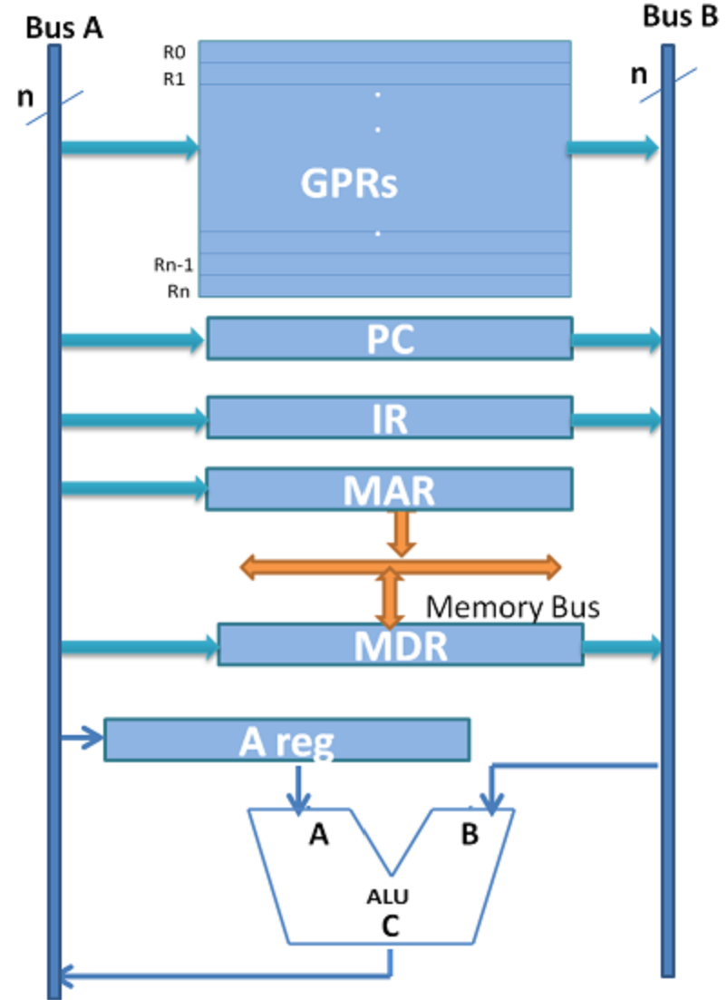Example: Instruction Fetch
Instruction Fetch. The table below details, the navigation of information for instruction fetch from memory in the case of Single bus and Two bus datapaths.
指令取出。下表详细说明了在单总线和双总线数据路径的情况下，从内存中获取指令的数据路径。
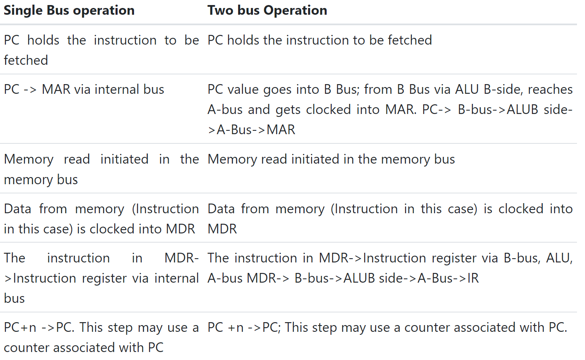Example: Store instruction
Store instruction. ST R4, LOC1. The operation to be carried out is the content of Register 4 of GPR to be stored in memory location LOC1. Instruction is decoded in the fetch phase as ST (Store) and the memory location address LOC1 for storing is available in IR.
存储指令。ST R4, LOC1。要执行的操作是将GPR寄存器4的内容存储在内存位置LOC1中。指令在读取阶段被解码为ST (Store)，用于存储的内存位置地址LOC1在IR中可用。
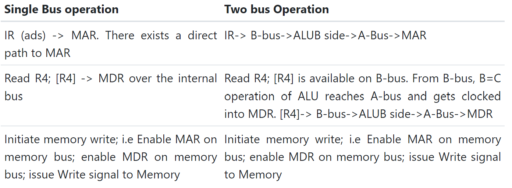Control Unit Design
控制单元设计
To execute an instruction, the control unit of the CPU must generate the required control signal in the proper sequence. There are two approaches used for generating the control signals in proper sequence as Hardwired Control unit and the Micro-programmed control unit.
为了执行一条指令，中央处理器的控制单元必须按适当的顺序产生所需的控制信号。有两种方法用于按适当顺序产生控制信号:硬布线控制单元和微程序控制单元。
Hardwired Control Unit
硬布线控制单元
Hardwired Control Unit is implemented using Combinational Logic which includes Logic Gates, Decoders, Encoders and Counters. The control hardware can be viewed as a state machine that changes from one state to another in every clock cycle, depending on the contents of the instruction register, the condition codes, and the external inputs. The outputs of the state machine are the control signals.
硬布线控制单元使用组合逻辑实现，其中包括逻辑门，解码器，编码器和计数器。控制硬件可以看作是一个状态机，根据指令寄存器的内容、条件代码和外部输入，在每个时钟周期内从一种状态转换到另一种状态。状态机的输出是控制信号。
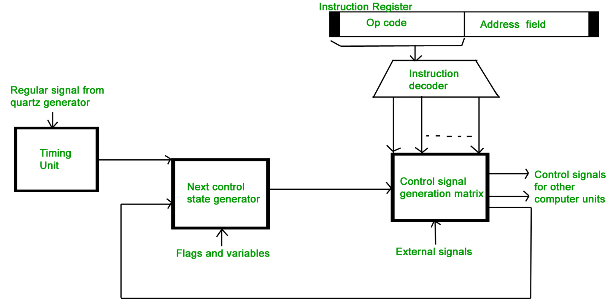Micro-programmed Control Unit
微程序控制单元
The control signals associated with operations are stored in special memory units inaccessible by the programmer as Control Words. Control signals are generated by a program that is similar to machine language programs. The micro-programmed control unit is slower in speed because of the time it takes to fetch microinstructions from the control memory.
与操作相关的控制信号以控制字的形式存储在程序员无法访问的特殊内存单元中。控制信号是由类似于机器语言程序的程序产生的。微程序控制单元的速度较慢，因为它需要时间从控制存储器中获取微指令。
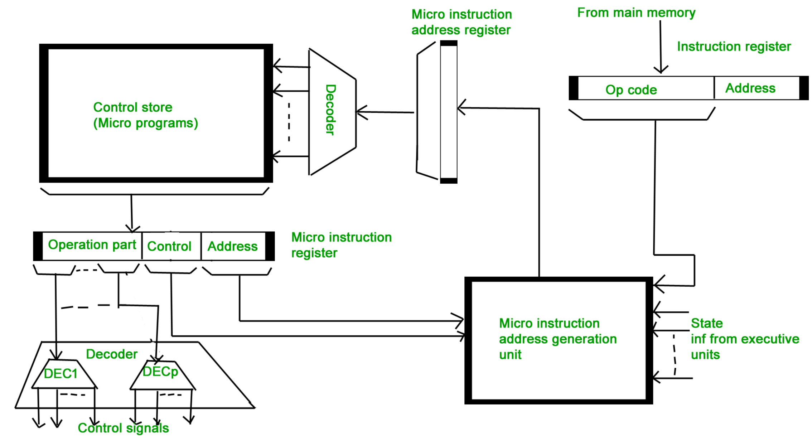Types of Micro-programmed Control Unit
微程序控制单元的类型
Based on the type of Control Word stored in the Control Memory (CM), Micro-programmed Control Unit is classified into two types :
根据存储在控制存储器(CM)中的控制字的类型，微程序控制单元分为两种类型。
Horizontal Micro-programmed Control Unit
水平型微程序控制单元
The control signals are represented in the decoded binary format that is 1 bit/CS. Example: If 53 Control signals are present in the processor then 53 bits are required. More than 1 control signal can be enabled at a time.
控制信号以1 bit/CS的解码二进制格式表示。例如:如果处理器中存在53个控制信号，则需要53位。可同时使能1个以上的控制信号。
Vertical Micro-programmed Control Unit
垂直型微程序控制单元
The control signals are represented in the encoded binary format. For N control signals- Log2(N) bits are required.
控制信号以编码的二进制格式表示。对于N个控制信号-需要Log2(N)位。
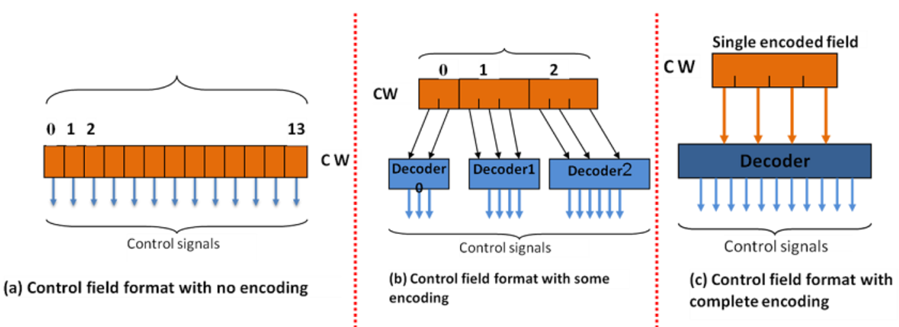